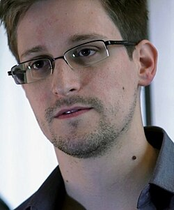

HACKERS MAS FAMOSOS
| kEVIN MITNICK | |
| Kevin David Mitnick (6 de agosto de 1963 - 16 de julio de 2023) (59 Años) Fue uno de los hackers, crackers y phreakers estadounidense más famosos de la historia. Su nick o apodo fue Cóndor. También apodado por él mismo como «fantasma de los cables». Su último arresto se produjo el 15 de febrero de 1995, tras ser acusado de entrar en algunos de los ordenadores más seguros de los Estados Unidos. Ya había sido procesado en 1981, 1983 y 1987 por diversos delitos electrónicos. |
|
| GEOHOT | George Francis Hotz, (Glen Rock (Nueva Jersey), Estados Unidos, 2 de octubre de 1989) (34 Años), Alias geohot, es un hacker, empresario e ingeniero de software estadounidense. Es conocido por el desarrollo de jailbreaks para iOS, haber aplicado ingeniería inversa a la PlayStation 3, y por la posterior demanda interpuesta contra él por Sony. Desde septiembre de 2015, trabaja en su propia empresa comma.ai, enfocada en el aprendizaje automático para vehículos autónomos. Desde noviembre de 2022, ha estado trabajando en tinygrad, un marco de trabajo (framework) de aprendizaje profundo (deep learning). Su pagina web es :La pagina de Geohot |
| JOHN DRAPER | |
| John Thomas Draper (11 de marzo de 1943) (80 Años), También conocido como Captain Crunch o Crunchman, es un programador y exphreaker estadounidense. Es una personalidad conocida dentro de la cultura hacker debido a sus estudios sobre el funcionamiento de los teléfonos a comienzos de los años 1970, lo que le permitió realizar llamadas de larga distancia de manera gratis. Es muy conocido en el mundillo de la programación y de la ciberseguridad, además de habitualmente llevar un estilo de vida nómada. Actualmente esta en una residencia. |
|
| STEVE WOZNIACK | |
 |
Stephen Gary Wozniak ( San José, California, 11 de agosto de 1950) (73 Años), También conocido por su apodo "Woz", es un ingeniero en computadores, programador, filántropo y emprendedor tecnológico estadounidense. En 1976, cofundó Apple Inc., que más tarde se convirtió en la compañía de tecnología informática más grande del mundo por ingresos y la compañía más grande del mundo por capitalización de mercado. A través de su trabajo en Apple en las décadas de 1970 y 1980, tanto él como Steve Jobs, cofundadores de la empresa, son ampliamente reconocidos como dos destacados pioneros de la revolución de las computadoras personales. En 1975, Wozniak comenzó a desarrollar la primera computadora de Apple, el Apple II que se convirtió en la primera computadora lanzada por Apple cuando él y Jobs comenzaron a comercializarla el año siguiente. Diseñó la Apple II inicialmente en 1977, conocida como una de las primeras microcomputadoras de gran éxito producidas en masa mientras Jobs supervisaba el desarrollo de su caja de plástico moldeado en espuma y el primer empleado de Apple, Rod Holt, desarrollaba la fuente de alimentación de conmutación. Con el ingeniero de software Jef Raskin, Wozniak tuvo una gran influencia en el desarrollo inicial de los conceptos originales de Apple Macintosh de 1979 a 1981, cuando Jobs se hizo cargo del proyecto tras la breve salida de Wozniak de la empresa debido a un traumático accidente de avión. Después de dejar Apple permanentemente en 1985, Wozniak fundó el CL 9 y creó el primer control remoto universal programable, lanzado en 1987. Luego siguió varios otros negocios y empresas filantrópicas a lo largo de su carrera, centrándose principalmente en la tecnología en las escuelas de K-12. A noviembre de 2019, Wozniak ha permanecido como empleado de Apple en un puesto ceremonial desde que se retiró en 1985. Y como dato anecdotico recibe de Apple 5 dolares todos los meses. |
| EDWARD SNOWDEN | |
|  | Edward Joseph Snowden (Elizabeth City, Carolina del Norte; 21 de junio de 1983) (40 Años) Es un consultor tecnológico estadounidense y naturalizado ruso, exempleado de la Agencia Central de Inteligencia (CIA) y de la Agencia de Seguridad Nacional (NSA). En junio de 2013, a través de los periódicos The Guardian y The Washington Post, Snowden hizo públicos documentos clasificados como alto secreto sobre varios programas de la NSA, entre ellos los programas de vigilancia masiva PRISM y XKeyscore. Se cree que Snowden huyó a Rusia desde Hong Kong y solicitó asilo político a España, Venezuela, Bolivia, Cuba y Ecuador, entre un total de 21 países. El Departamento de Justicia de Estados Unidos clasificó la participación de Snowden en el programa de vigilancia PRISM como un «asunto criminal». El 3 de julio de 2013 el avión presidencial de Evo Morales, que contaba con inmunidad diplomática, fue forzado a aterrizar por 4 países de la Unión Europea, debido a sospechas de que Snowden viajaba a bordo con el presidente de Bolivia. El avión retomó el rumbo luego de que autoridades austriacas notificaran que habían hecho un registro dentro de la aeronave. El 5 de julio de 2013, el presidente venezolano Nicolás Maduro ofreció asilo humanitario a Snowden, al mismo tiempo, el presidente nicaragüense Daniel Ortega dijo que estaban considerarando brindar asilo a Snowden y afirmó que Nicaragua ya había recibido la carta de petición de asilo en su embajada en Moscú. El 26 de septiembre de 2022, el presidente ruso Vladímir Putin le otorgó por decreto la nacionalidad rusa a Snowden. |